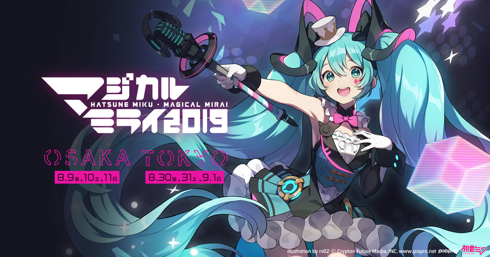
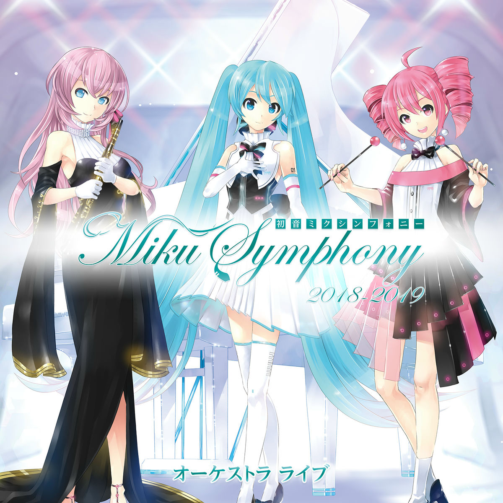

Álbuns Da Hatsune Miku

Project Diva
Ouvir no YouTube
Re:Dial
Ouvir no YouTube
Magical Mirai 2019 Album
Ouvir no YouTube
Hatsune Miku Symphony
Ouvir no YouTube
Trilha sonora oficial do jogo Project Diva. Contém músicas clássicas da Hatsune Miku com ritmos animados e icônicos, perfeitas para fãs do jogo de ritmo. Inclui hits como "World is Mine" e "Melt", que se tornaram verdadeiros símbolos do universo Vocaloid.
Músicas emocionais e experimentais. Este álbum mostra a versatilidade de Miku, com canções que transitam entre melancolia e energia, explorando novos estilos e arranjos. É ideal para quem quer conhecer o lado mais artístico e inovador da vocaloid.
Temas do evento anual Magical Mirai. Contém performances ao vivo de músicas clássicas e novas da Hatsune Miku. Este álbum celebra a cultura Vocaloid, trazendo arranjos energéticos e emocionantes que capturam a experiência do show e a interação com os fãs.
Versões orquestrais de músicas da Miku. Este álbum traz arranjos clássicos de grandes sucessos da Hatsune Miku, mostrando a dimensão sinfônica das canções virtuais. Ideal para fãs que apreciam música orquestrada e querem ouvir Miku de forma sofisticada e imersiva.